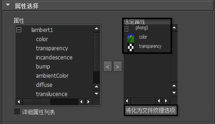

可以在 PSD 文件中包含程序纹理，同时它们会在 Maya 中被自动转化为文件纹理。这些新文件纹理包含特定选项，这些选项可以使用“创建/编辑 PSD 网格选项”(Create/Edit PSD Network Options)窗口中的“转化为文件纹理选项”(Convert to File Texture Options)按钮调整。详细信息请参见 Texturing_menu。
调整转化选项
- 从“选定属性”(Selected Attributes)列表（“属性选择”(Attributes Selection)区域的“创建/编辑 PSD 网络选项”(Create/Edit PSD Network Options)窗口）选择一个或多个映射到程序纹理的属性。
对应于 2D 或 3D 纹理类型的图标表示程序纹理。

- 单击“转化为文件纹理选项”(Convert to File Texture Options)按钮。
将显示“PSD 转化实体选项”(PSD Convert Solid Options)对话框。
- 执行下列操作之一：
- 如果仅选择了一个属性来调整转化选项，继续下一步。
- 如果选择了不止一个属性来调整转化选项，从“连接的属性”(Connected Attributes)列表选择其中的一个对象。
- 必要时调整选项。
这些选项是使用“Maya 软件”(Maya Software)渲染器转化为文件纹理时可用的选项子集。有关选项的信息，请参见编辑 > 转化为文件纹理(Edit > Convert to File Texture)。
- 执行下列操作之一：
- 如果仅选择了一个属性来调整转化选项，单击“应用”(Apply)或“关闭”(Close)。
将关闭“PSD 转化实体选项”(PSD Convert Solid Options)对话框。
- 如果选择了不止一个属性来调整转化选项，单击“应用”(Apply)。现在，可以为“连接的属性”(Connected Attributes)列表中的任何其他属性重复步骤 3-5。完成后，单击“关闭”(Close)。